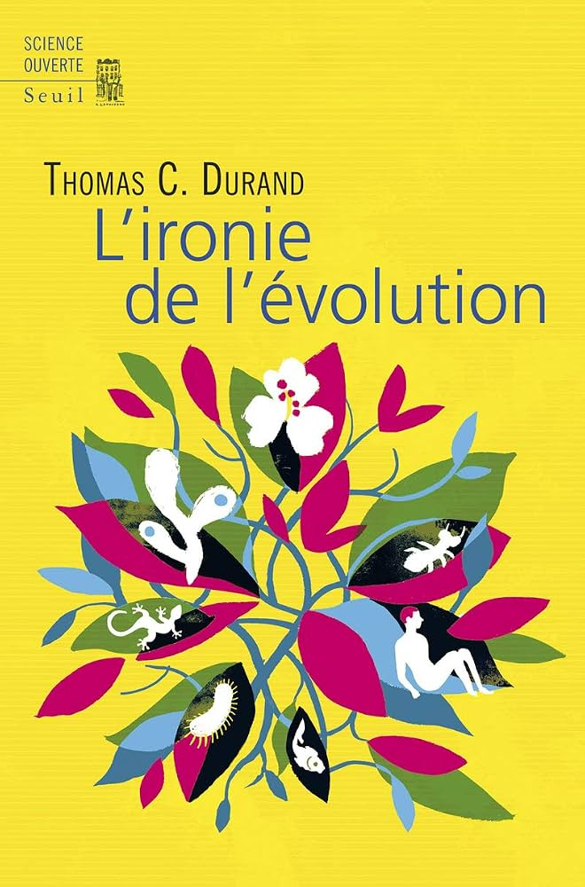
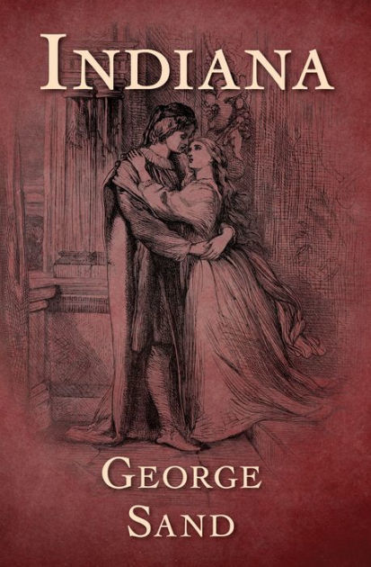

Articles à venir
Derniers articles
Le grand retour de la peine de mort en spectacle aux États-Unis
Littérature & Politique sur Internet : étude de cas du Hussard
Décryptage du discours présidentiel du 18 octobre 2026
Thélyson Orélien, un scandale littéraire ? Une analyse statistique
Revendications lycéennes et traitement médiatique : une lutte asymétrique
Dernières critiques
L'Ironie de l'évolution — Thomas Durand
Une lecture mitigée, néanmoins, une bonne vulgarisation de la théorie de l'évolution

L’Ironie de l’évolution est un ouvrage de Thomas Durand, paru aux éditions du Seuil en 2018 et rattaché à la catégorie des sciences humaines et des sciences ouvertes. A l’intérieur de ces pages sont traités : les théories évolutionnaires ; les biais cognitifs ; la religion ; et une explication évolutionnaire de la religion. Programme ambitieux, donc, qui a été récompensé par une place dans la sélection « La science se livre » organisée par la Bibliothèque nationale de France.
Cette lecture s’inscrit dans un contexte assez particulier ; formé aux sciences sociales (passée par une classe préparatoire B/L, admissible au département SHS de l’ENS Paris-Saclay, diplômé de Sciences Po), je suis tombé récemment sur une vidéo d’un Youtubeur, « Evosapiens », docteur en psychologie évolutionnaire, qui commentait une autre vidéo des « Revues du Monde » sur le dégoût. Et il l’expliquait par la biologie et les mécanismes adaptatifs de l’évolution ! Grave erreur ! C’est un interdit absolu, une hérésie, presque ! On ne peut pas essentialiser ou naturaliser des comportements ou des structures sociales par une approche biologique.
Mais de fait, j’ai été suffisamment troublé pour chercher à me renseigner sur le sujet, et j’ai découvert tout un monde de controverses, où cohabitent de façon plus ou moins indistinctes et floues, psychologie évolutionnaire, biologie comportementale,…
Continuer à lireIndiana — George Sand
Un classique que j'ai adoré, une critique de l'homme tel qu'il est façonné par la société avant d'être une critique du mariage

Il est certain qu’en ouvrant le livre la première fois, je ne m’attendais pas réellement à cela. L’histoire est surprenante, et à plus d’un égard. À savoir avant de commencer, que George Sand est un nom de plume (Aurore Dupin de son vrai nom) qu’elle emprunte à l’un de ses amants, Jules Sandeau. En réalité, l’histoire est assez sinueuse et complexe, et révèle toute la difficulté qu’ont les femmes pour se faire une place dans le monde de la littérature. On notera aussi qu’habituellement, George est écrit avec un « s ». Ce n’est pas le cas ici. Forme de rébellion face aux contraintes d’un monde patriarcal ? Peut-être… ou simplement un patronyme anglais.
Un départ classique, transcendé par une écriture audacieuse
Un peu avant la révolution de 1848. À l’écart de Paris, dans le château de Lagny, Indiana vit avec son mari, un vieux colonel antipathique, rude et autoritaire. Elle s’ennuie, se morfond dans sa cage dorée. L’ombre égoïste qui erre sans but derrière elle éclaire encore ses journées paresseuses sans jamais parvenir à l’en tirer.
Et puis il y a cette rencontre étonnante – c’est le cas de le dire – qui va bouleverser sa vie. Pour la première fois, l’amour envahit son cœur avec une violence telle qu’elle est prête à tout, absolument tout pour satisfaire ce besoin impérieux qui la dirige tout entière. Raymon est son sauveur. Elle le sait. Il le sait. S’ensuit alors un…
Continuer à lireAu bonheur des morts — Viniane Despret
Un essai intéressant et inhabituel, dans un champ très peu exploré

Au bonheur des morts est un essai de la philosophe Vinciane Despret, paru en 2015 sous-titré Récits de ceux qui restent dont la problématique tourne autour de deux questions : comment les vivants s’occupent des morts, et qu'est ce que les morts attendent des vivants. C’est un livre compliqué à lire. Il est dense, il avance par détours, et il demande un véritable effort malgré un côté touchant que j'ai beaucoup apprécié.
La démarche
Despret ne part pas d’une théorie. Pendant un an, elle s’est contrainte à écouter les conseils avisés qu’elle recevait et à recueillir des histoires de gens en rapport avec leurs morts. « Je m’attache à suivre les choses telles qu’elles se présentent », en espérant apprendre de leurs « connivences » et de leurs « frictions ». Il faut partir du milieu et suivre tous les êtres à partir de là. Les histoires récoltées sont bien construites, bien formées, et cela révèle une intelligence particulière des événements : les gens savent raconter ce qui leur arrive, même quand cela dépasse la raison, et il y a là un côté contradictoire avec ce que les courants matérialistes et zététiques laissent parfois entendre, selon lesquels ceux qui croient le font par faiblesse d'esprit (il faut, selon Ricoeur dans un chapitre d'Autour du politique, toujours présumer la liberté d'autrui à adhérer à ses idées).
Le livre entremêle deux récits. L’un est une enquête…
Continuer à lire